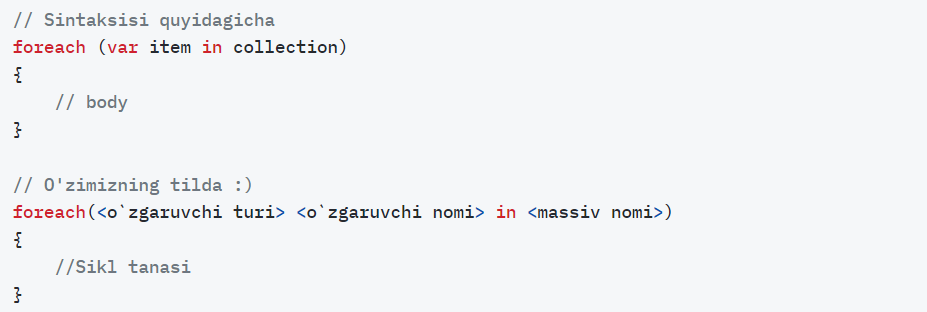

forEach siklining for, while, do while sikllaridan asosiy farqi foreach sikliga shart berilmaydi. Foreach sikli asosan massivlar va kolleksiya qiymatlari bilan ishlashni osonlashtirish uchun mo‘ljallangan bo‘lib, bunda massivning har bir elementiga undagi elementlar sonini bilmagan holda barcha elementlariga murojaat qilish imkonini beradi.
Bu yerda e’tibor qaratiladigan jihati o‘zgaruvchi turi massiv turi bilan mos kelishi lozim
Biz avvaliga qiladigan ishimizni bilib olishimiz lozim, demak biz qandaydir elementlarga ega massiv yaratamiz va foreach sikli orqali massiv elementlarini ekranga chiqaramiz.
some: faqat true yoki false qaytaradi!!! some bitayamta true topsa asheta tohtedi!
every: faqat true yoki false qaytaradi!!! every bitayamta false topsa asheta tohtedi!
fillter bu some va every bn birhil yoziladi.